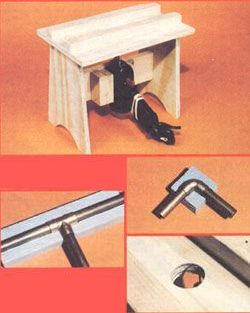

ABOVE: The bench serves two purposes: It holds the soldering gun in place /with a wedge to allow for easy removal), and its channel guides the polystyrene past the gun's hot tip. RIGHT: We shaped this piece of insulation for a 90? elbow completely by hand. BELOW: To obtain a tee molding, make a straight cut, then hand-form the leg. BELOW, RIGHT: The working part of thegroover